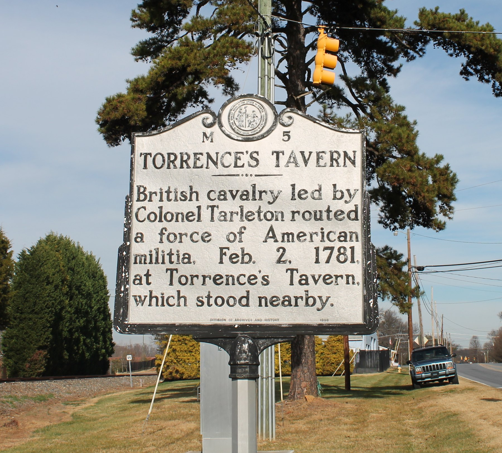
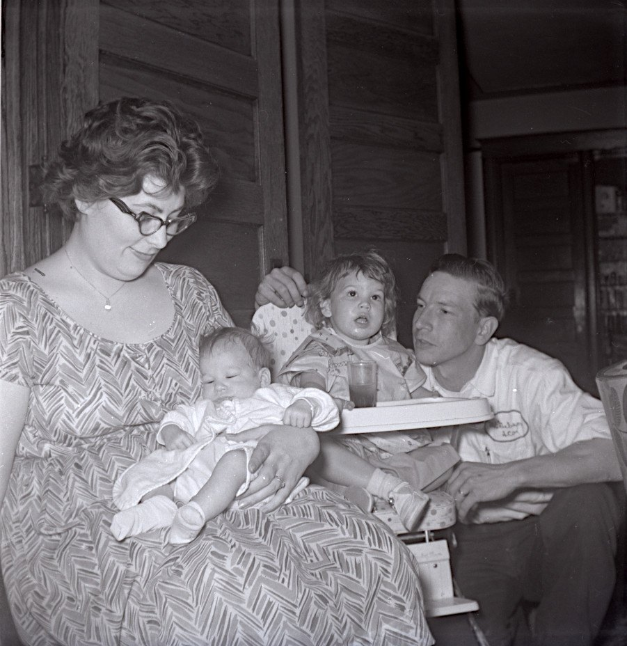

Deanna’s father, Buddy Torrence, came to Indiana from the Blue Ridge, and his people can now be followed back through two hundred years of North Carolina records to a tavern on the Salisbury road. The words of Grandma Delores quoted here are from her 2018 interview, which is on the Grantham page.
Buncombe County, North CarolinaBuddy Torrence
Buddy John Torrence was born on 11 August 1935 in the mountains around Asheville, the youngest of the seven children of Ralph Richardson Torrence (1902–1949) and Minnie Lee Emory (1904–1986). For years Ben’s tree had the wrong Ralph — a Ralph Eury Torrence whose line ran back to a Hugh Torrance of Gaston County, born in 1732 — and an earlier version of this page said so. Two obituaries of October 1949 settled it: the Anderson, South Carolina paper’s notice of Ralph R. Torrence lists his children, and they are Buddy and his brothers and sisters.
George Torrence of Long Shoals
Until October 2026 the line stopped at George, a name on the 1880 census with no parents and no end. What opened it was his grandfather’s will. On 20 February 1844 an old man named Adam Torrence, “of the county of Iredell … in a low state of health,” gave his daughters Ann, Elizabeth, Sarah and Lovey a bed, a trunk and an enslaved boy or girl apiece, left his son Adam the use of the home place for life, and then the whole 228 acres “to Adam William White Torrence & George Torrence my son Adam Torrence’s children.” George was a baby. The 1850 census of Iredell County has the household: Adam, sixty, blacksmith; Isabella, thirty-six; and three small boys, Adam W. W., George A., and Thomas N. The elder Adam had married a Grizell Matthews in Mecklenburg County back in 1817; Isabella was a second wife, and the three boys were hers.
All three went to war. George enlisted at eighteen in Mecklenburg County on 1 May 1861, in Company B of the 1st North Carolina Volunteers, the six-month “Bethel” regiment, and was mustered out that November. In September 1863 he enlisted again, this time from Iredell, in Company B of the 4th North Carolina, where his brother Thomas had been serving since 1861. On 19 May 1864 at Spotsylvania Court House both were hit; the casualty list the regiment’s chaplain sent to the Raleigh paper reads “T N Torrence face, G A Torrence arm severe.” George came back to the company that August and was paroled at Charlotte on 23 May 1865. William, the eldest, fought with the 37th North Carolina, was wounded at Shepherdstown in 1862 and again in the Wilderness, and finished the war in a prison camp on Hart’s Island in New York harbor.
By 1869 George and Mollie were in Cocke County, Tennessee, where John W. was born that August; by 1870 Mollie was keeping house in Buncombe County, and from 1875 George turns up every year or two in the Asheville papers’ lists of county claims — “George Torrence, work on bridge, $8.00,” “G A Torrence, repairs on Smith bridge,” “rock work,” “building culverts” — a bridge carpenter and rock mason who worked for Buncombe County for nearly thirty years. He owned the land at the Long Shoals bridge on the French Broad, at Avery’s Creek south of Asheville, and in October 1891, when workmen digging the abutments for a new bridge there struck a vein of ore, “Mr. Torrence brought a bagful of the find to Asheville, and has sent it to Charlotte to have it assayed.” They thought it might be silver. Nothing more was heard of it. In 1894 he was one of Avery’s Creek’s five delegates to the county Democratic convention; in May 1900 he rode the train to Louisville with two hundred Buncombe veterans for the Confederate reunion.
Mollie died at Cane Creek, just over the Henderson County line, on 3 March 1900; the Asheville Times gave her one line. George was paid for bridge work for the last time in December 1902 and then disappears: no 1910 census, no death certificate, no stone that anyone has found. The Avery’s Creek churchyard where his grandson G. W. was buried in 1919 is the place to look.
Ramsour’s Mill, 20 June 1780
The Adam Torrence who wrote the 1844 will was, it turns out, a Revolutionary soldier, and his pension file in the National Archives tells the story in his own words. In October 1824 two old comrades came to his house in Iredell County and swore that he had been a private in Captain James Houston’s company under Colonel Francis Locke, and that at the battle of Ramsour’s Mill in Lincoln County, on 20 June 1780, he had been shot through the left hip; that he was “a Blacksmith & farmer” who had “raised a large family by the sweat of his brow — four sons & six daughters.” A month later, from Mount Mourne, Adam added a letter of his own. He was sixty-seven, “bred a Blacksmith,” and had put off asking for anything “so long as I held power to labor”:
…at the Battle of Ramsour’s, Lincoln County, where I saw my Father fall on the field of Battle, being shot dead through the head by a ball, & a few moments afterwards I was shot in the hip & which hurt me all my life since… If I was as I were when my Father & myself ascended the hill where he was slain by the enemies of America’s Liberty, I would not now be an applicant for help.
Adam Torrence to the pension office, Mount Mourne, 30 November 1824
He was put on the roll at $5.33 a month, raised to full disability in 1828. The father who fell beside him was Adam Torrence Sr., born about 1732, who kept a tavern on the Salisbury road at Mount Mourne, where Rowan County then was. The muster list of Houston’s company for the Ramsour’s Mill campaign — thirty-three men, “from May 22d to June 22d, 1780” — survives in the National Archives with “Adam Torrens Sr” and “Adam Torrens Jr” on it; Moses White lent the same list to the Charlotte paper in 1868. The Daughters of the American Revolution carry the elder Adam as ancestor A114881, “died at the Battle of Ramsour’s Mill,” and twelve of their members have proved descent from him. Ramsour’s Mill was a brawl between neighbors, Whig militia against a larger body of Loyalists, fought at dawn in fog on a hillside above the mill at present-day Lincolnton, with no uniforms on either side; about seventy men were killed, and the elder Adam lies there in an unmarked grave.
Adam Torrence before the war
Where the elder Adam came from is only half known, but the half that is known is vivid. In the 1750s he was a squatter on the far edge of Pennsylvania. The Juniata valley, a hundred miles west of Philadelphia, had been bought from the Iroquois only in 1754, and settlers were pushing in ahead of the surveyors; a Pennsylvania county historian wrote that “Adam Torrence commenced an improvement on the ‘Hart’s Log’ tract, at Alexandria, in the fall of 1754, but was driven off by the Indians in 1755.” That autumn, after General Braddock’s army was destroyed on the Monongahela, the Delaware and Shawnee turned on the Pennsylvania frontier. The first blow fell on Penn’s Creek on 16 October 1755, where a settlement of some twenty-five people was killed or carried off, and a burial party from the Cumberland settlements that went up to find the bodies was ambushed nine days later as it crossed the Susquehanna at the mouth of Mahanoy Creek. The 1938 family history, citing a county history we have not been able to find, puts Adam in that party and says that “had it not been for his knowledge of the Delaware Indian dialect, he and his associates would not have escaped.” The Delaware-speaking Adam is tradition; what the land office proves is that he kept his claims. On 3 June 1762, when the frontier had quieted, Adam Torrence took out three warrants in Cumberland County: 200 acres on the Little Juniata two miles above its mouth, 100 acres on Shaver’s Run, and 100 acres “west of the Susquehanna near Mahanoy and Penn’s Creek” — the ground of the ambush. He never had the last one surveyed, and the first two were patented in 1769 to another man. By then he had gone south.
He was in North Carolina within three years. On 11 September 1765 the three sons of Robert Johnson sold “Adam Torrance” 311 acres on the ridge between Rocky River and the Catawba, part of a grant their father had taken from Earl Granville in 1757, for a hundred pounds; the deed is in Rowan County Deed Book 6. This was the backcountry of Rowan, a county that then ran west to the mountains (Iredell was cut from it in 1788), settled in the previous fifteen years by Scotch-Irish families coming down the wagon road from Pennsylvania, and Adam’s land lay on the road from Beattie’s Ford on the Catawba to Salisbury, the county town. A tavern on such a road was inn, store, post office and meeting hall at once, and Torrence’s became the public house of the Centre congregation. In 1775, when the royal government collapsed and county Committees of Safety took its place, the Rowan committee at Salisbury ordered a party of its members — Griffith Rutherford, John Brevard, Adlai Osborne, Joseph Dickson, James Kerr, William Alexander and James Brandon — “to attend at Adam Torrence’s, on the 25th instant,” to examine a neighbor named James Garner who had spoken against the cause; Captain William Davidson, who would die at Cowan’s Ford, was to bring him in. On 25 September 1775 six of them met at the tavern, heard Garner out, and let him off when he “signed the test.” It is the one day in Adam’s life we can watch: the leading Whigs of the district in his great room, five years before Ramsour’s Mill. Hunter’s 1877 history remembered him simply as “a staunch Whig.”

Ann Torrence and the burning of the tavern
Ann Bonar Torrence was about forty-four when her husband was killed, with eight children at home, the youngest, Margaret, about six. She and her eldest son Hugh took out letters of administration, sold the movable estate, and went on keeping the tavern. Then the war came up the road. In January 1781 Daniel Morgan destroyed Tarleton’s force at the Cowpens in South Carolina, and Lord Cornwallis, burning his own baggage to move faster, chased Morgan and Nathanael Greene across North Carolina toward Virginia. On the morning of 1 February the British forced the Catawba at Cowan’s Ford, ten miles from the tavern; General William Lee Davidson was shot dead on the bank, and his militia fell back along the Salisbury road. Several hundred of them, with wagons of refugees fleeing ahead of the army, stopped at Torrence’s. Joseph Graham, who was there, remembered that “being wet, cold and hungry, they began to drink spirits, carrying it out in pailsful,” while the wagons jammed the lane, until the alarm came from the west end of it that Tarleton was coming. Tarleton’s dragoons charged through them in the rain, killed about ten by the Americans’ count (Tarleton claimed forty), and rode on. Cornwallis made the tavern his headquarters that night — his order thanking the Guards for the crossing is dated “Cross Roads to Salisbury, 1st Feb. 1781” — and when the army marched at half past five the next morning it burned the house behind it, along with John Brevard’s. Graham could explain it only one way: it was “kept by the widow Torrence; her husband had been killed at the battle of Ramsour’s Mill… No other cause could be assigned for this barbarous mode of warfare.”
The family’s papers went with the house. Sixty years later, when the heirs of a daughter sued for a share of Adam’s estate, the Supreme Court of North Carolina found that “in February, 1781, the British army, in its march through this State, passed the family residence and burned it and the furniture and books of accounts, and destroyed most of the other property,” and that what was left after the debts was “something less than £200 specie, to be divided between the widow and eight children.” Ann rebuilt. She kept the estate in her own hands for the rest of her life, bought the Dunlap tract next to hers in 1789 under her own name, and died on 3 November 1802; she is buried at Centre church. Her goods were sold in March 1803 and the money divided, after a lawsuit that ran until 1836, “into seven shares”: George, Adam, Barnabas, Margaret, the children of Elizabeth McKnight, a Johnston grandchild, and Alexander. That receipt, signed by Adam the blacksmith in 1836, is what ties the 1844 will to the tavern and makes Ann the sixth-great-grandmother of Kip and Deanna’s children. Squire J. W. A. Kerr, who was born on the site in 1835, placed the tavern two hundred yards northeast of the house that later stood there, between the road and the railroad; the Daughters of the American Revolution set a slab there in 1914, and the state its marker in 1939.
The documents — the two wills, the pension file, the muster list, the estate papers, the census pages and about forty newspaper items — are listed, with where to find each one, in the research log George A Torrence and Torrence line research. What is still missing: George’s death and grave, Mollie’s family (the Iowa death record of their son Charles is the only thing that calls her a Grier), Isabella’s maiden name, and any record that names Adam Torrence Sr.’s parents.
Two generations on, Ralph is all over the Asheville papers. At seven, in December 1909, he and his brother Billie wrote letters to Santa Claus that the Citizen-Times printed. Billie — G. W. Torrence — died of influenza in January 1919, at twenty. In 1929 Ralph was caught poaching deer. In July 1934 the family’s house burned, and the paper described a father with six children left destitute; the next spring his father’s estate was sold off. By September 1939 he was in Greenville, South Carolina, marrying a Gladys Cater (Minnie later married James Willard Jones), and in 1948 he opened a shop in Anderson. He died there on 1 October 1949 after a week’s illness, at forty-six, and was buried back in the mountains at Avery Creek church near Skyland; the short obituary counted seven children and eight grandchildren. His father John’s own newspaper trail is livelier still: charged with “seduction on promise of marriage” in 1889, and, forty-three years later, helping to find a drowned boy — three months before his own death.
Buddy’s brothers and sisters were Billy Edgar (1923–2002), Betty Irene (1925–2003), Herbert Alexander (1927–1991), Mildred, Jeanette, and Dorothy (about 1933–2012).
Buddy came north as a young man to stay with his sister in Logansport and look for work, and found it as a cook at Longcliff, the state hospital — where Delores, fresh out of nursing school in South Bend, was working too. Her sister’s husband introduced them, and they were married in July 1959.
He always said he never asked me to marry him, that I was the one that… I don’t remember if he actually asked me, but I assumed, I guess.

He drove a truck most of his life — delivering RVs out of Elkhart as far as Long Island and Seattle, then hauling for the rendering plant in Frankfort, then a milk route. He played guitar and sang; there are recordings of him with Doris and Herb Gates of Cambria. The job brought the family to Frankfort, and about 1971 they bought the little house in Cambria.
Grandpa Bud and the liver and onions
Buddy himself, telling the story of the ice storm, the spilled liver and onions, and the race with his dog to get to it first.
His mom would not leave the mountains. She would not move across that mountain… But I loved those mountains too. And Bud loved those mountains. And now he’s buried up here in Indiana.
Buddy died on 21 May 1984, at forty-eight. Uly’s old Christmas Book, by then kept by Dad’s family, noted it that December: “Deanna’s father, Buddy J. Torrence, died on May 21.”